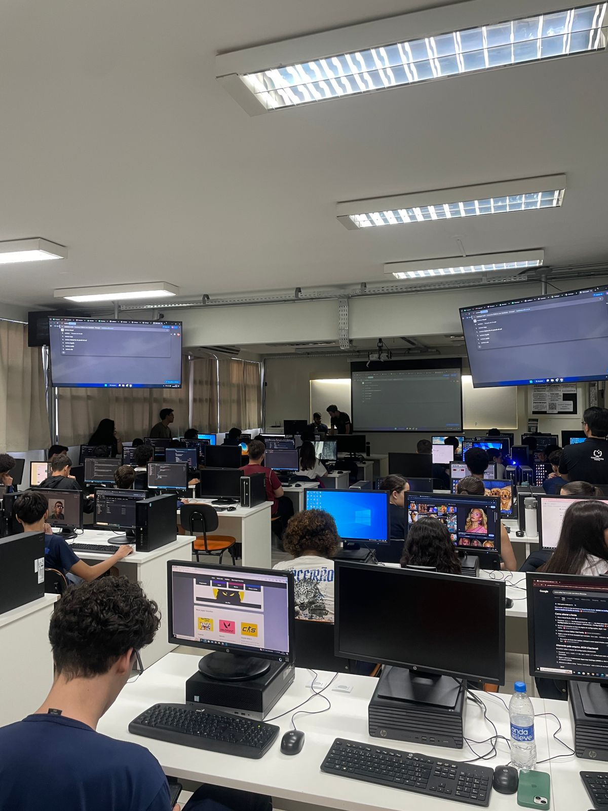

Relatório – 15ª Aula
Data: 01/09/2026
Turma: A
Instrutor: Victor
Finalizando o Currículo
Nesta aula as turmas do Felipe e do Victor se juntaram de forma deifinitiva, e para agilizar o processo de finalização do currículo, o Felipe disponibilizu o modelo que ele tinha feito no GitHub, e os alunos puderam utilizar como base para finalizar o currículo, e assim conseguiram finalizar os seus currículos.
Auxiliei alguns alunos que estavam com dificuldades, mas a maioria dos alunos conseguiu finalizar o currículo com tranquilidade, e assim conseguimos finalizar o projeto. No final da aula, todos os alunos colocaram seus códigos no GitHub, para posteriormente nós pudéssemos analizar e ver o que cada um fez e como evoluiram.
